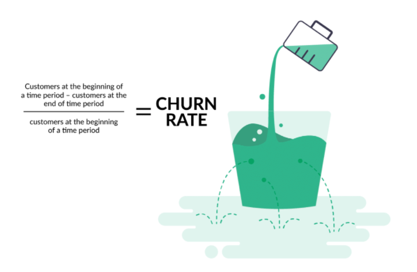

Customer Churn Classification Using non-parametric models
This was a project I started back in november 2020 when I first learned machine learning . I was the sole creator/developer for the project.
The data was sample from the population which was given to me by my mentor in internship and data was directly coming from client side (RAW DATA)
Major goal behind undertaking this project Majority of issue are miscommunicated and service executives resolve wrong issues rather than resolving right one. So, if we are able to build a churn detection for our issue description based on our historical Data.
Technologies:
- - Python
- - Matplotlib
- - pyplot
- - Dicision tree
- - Machine learning libararies like :-
- - SVM
- - KNeighborsClassifier
- - Random forest
- - Dicision tree
- - LogisticRegression
- - GridSearchCV and RandomizedSearchCV
Laboratory Admin Dashboard
Open a PDF file Churn project .